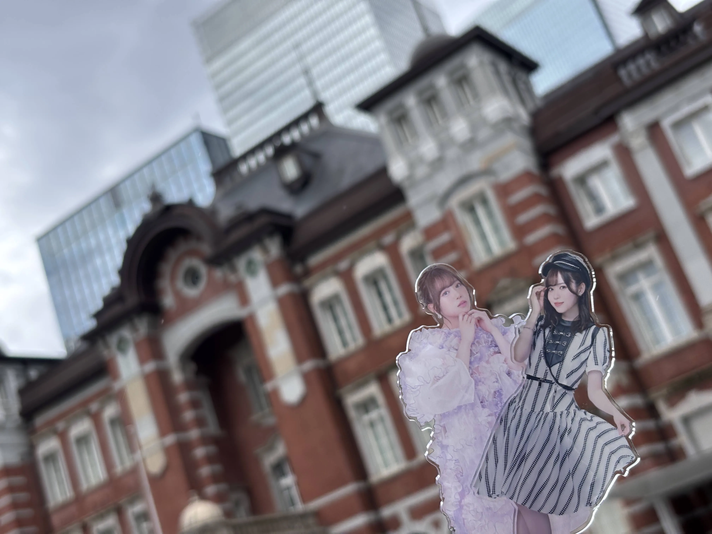
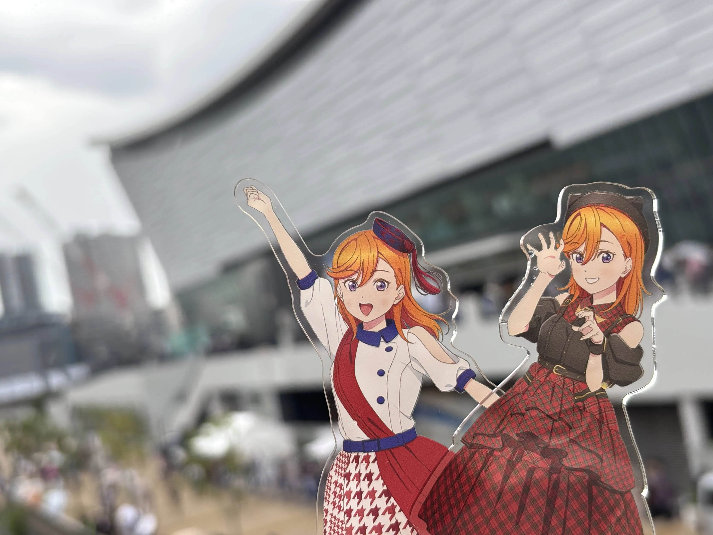
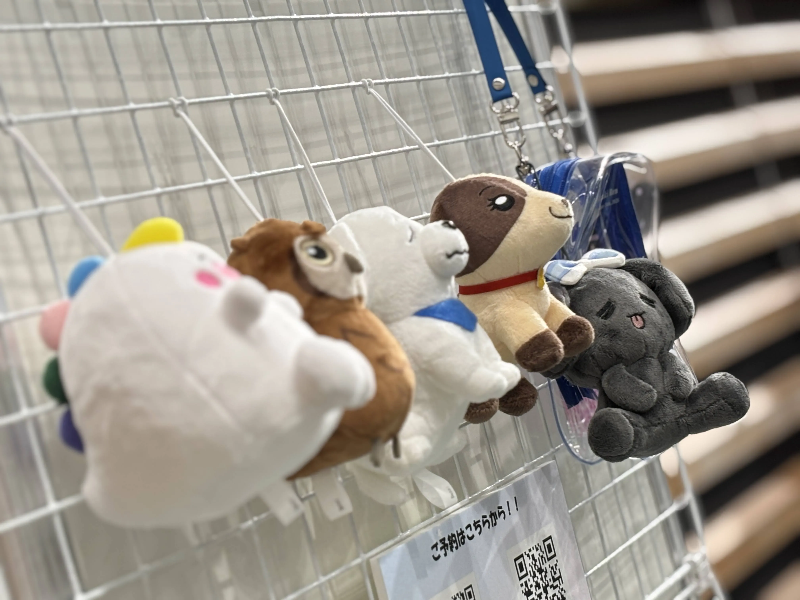

ラブライブ！スーパースター!! Liella! Special LoveLive! Connect the Starsに参加しました。
実質3日目ですね。3日連続で東京駅からスタート。
若干雲行きが怪しい中会場に到着。
例によってバスを使って移動したのですが、本当に快適。
可愛い子たちが物販エリアに居ました。
さて3日目（もうこのライブは3日扱いで良いですね…キャストもそう言ってたし…）も2階席。
場所としては真ん中でした。
隣の連番ヲタクが結構ガタイの良いヲタクだったのでペンライトが振りづらかったですね…かなしい。
セットリストの方ですが、なんと驚き！
最初のMCまでに3曲。特に印象に残ったのは「Jump Into the New World」ですかね。なんだか4thを思い出しました。
そして「MIRACLE NEW STORY」で高まりすぎて、ペンライトを懐中電灯にする魔法を使ってしまいました。
さらに悲報なのですが、11色以上出せるペンライトが手元に1本しかありません…。
というのも昨日より使用していた1stリバイバルペンライトと5th、6thを持ってきており、6thのペンライトを折ってしまったんですね…。
そんな事があったので適宜それっぽい色とか出しながらなんとか耐えました…。
MC後ですが！なんと！2、3期生での「Shooting Voice!!」と「スター宣言」が披露されました。
「Shooting Voice!!」に関しては昨日も披露されていましたが、精一杯コールをしました。
今思えば、ここで2期生・3期生だけの曲だったため感動してしまい、後半のユニット曲あたりでは集中力が持たなくなってしまいました。かなしい。
という事でアンコールの曲を…と言いたい所ですがなんと、発表事項がMC中に行われるという久々の展開。
ま、僕に取っては初なんですけどね…笑
発表事項としては、ファンディスクの内容、2期生、3期生によるリエラジの公開録音、7thライブ開催、それに伴うテーマソング発売でした。
正直7thライブないしユニット1stファンミは予想していましたが、発表事項がMC中…というのは予想してなかったですね…笑
7thライブは東京と愛知の2公演。流石に全通かなと今計画を練っています…笑（と言いつついつも全通ですよねアナタ。）
アンコールの曲は「アイコトバ！」と「シェキラ☆☆☆」。
最近はこの2曲がアンコールで披露される事が非常に多いのですが、そろそろ「TO BE CONTINUED」とかやってくれても良いんですよ…？
という事で、過去一集中力が持たなかったのと、「次が最後の曲でーす！」に対して本気で「ええー！」と言ってしまったライブでした。
3日間を総評すると2日目が一番楽しかったかな。
次のライブまで半年ほどあるので気長に待とうと思いました。